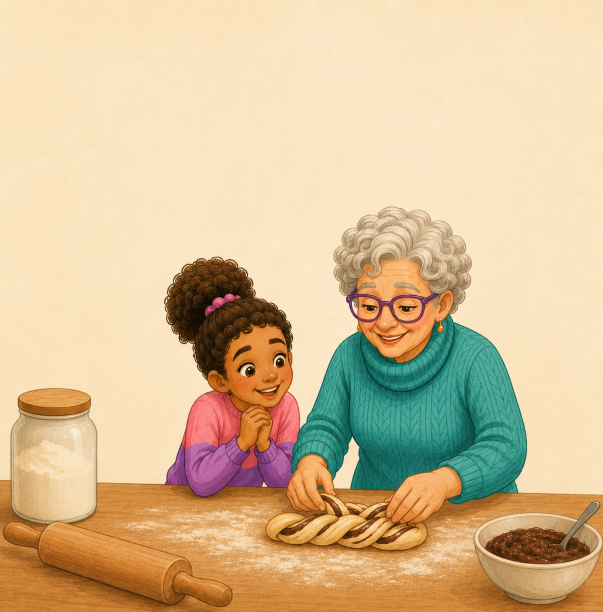
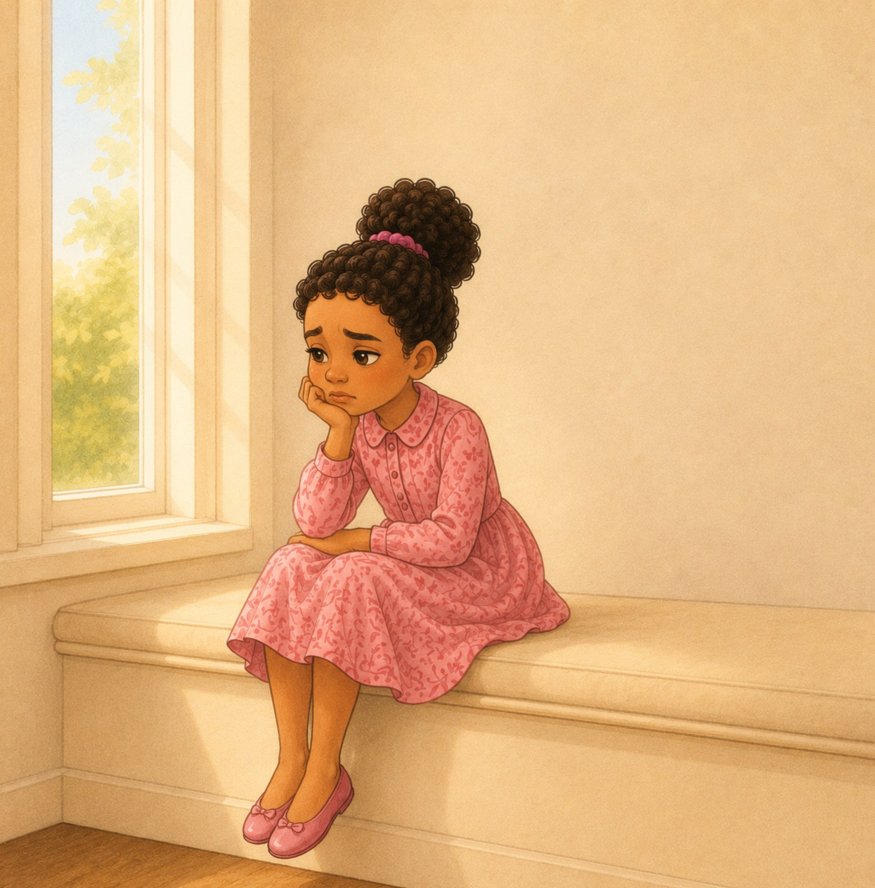
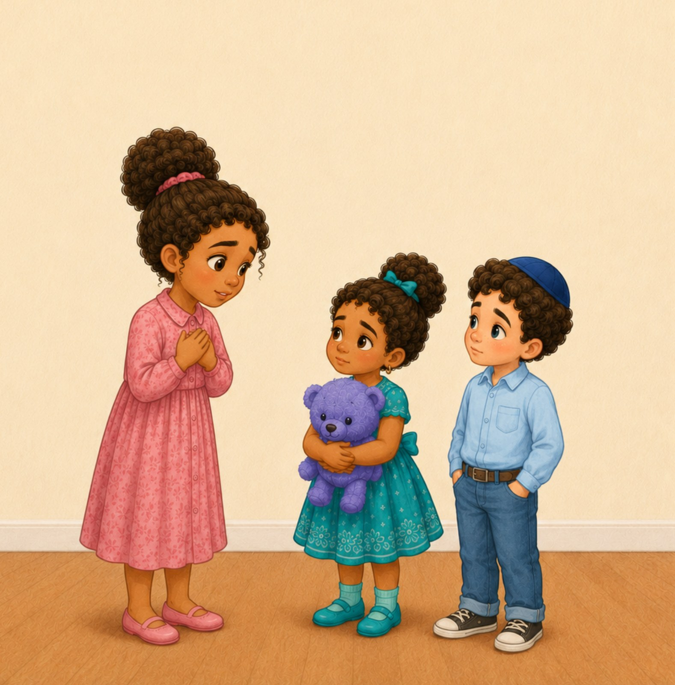
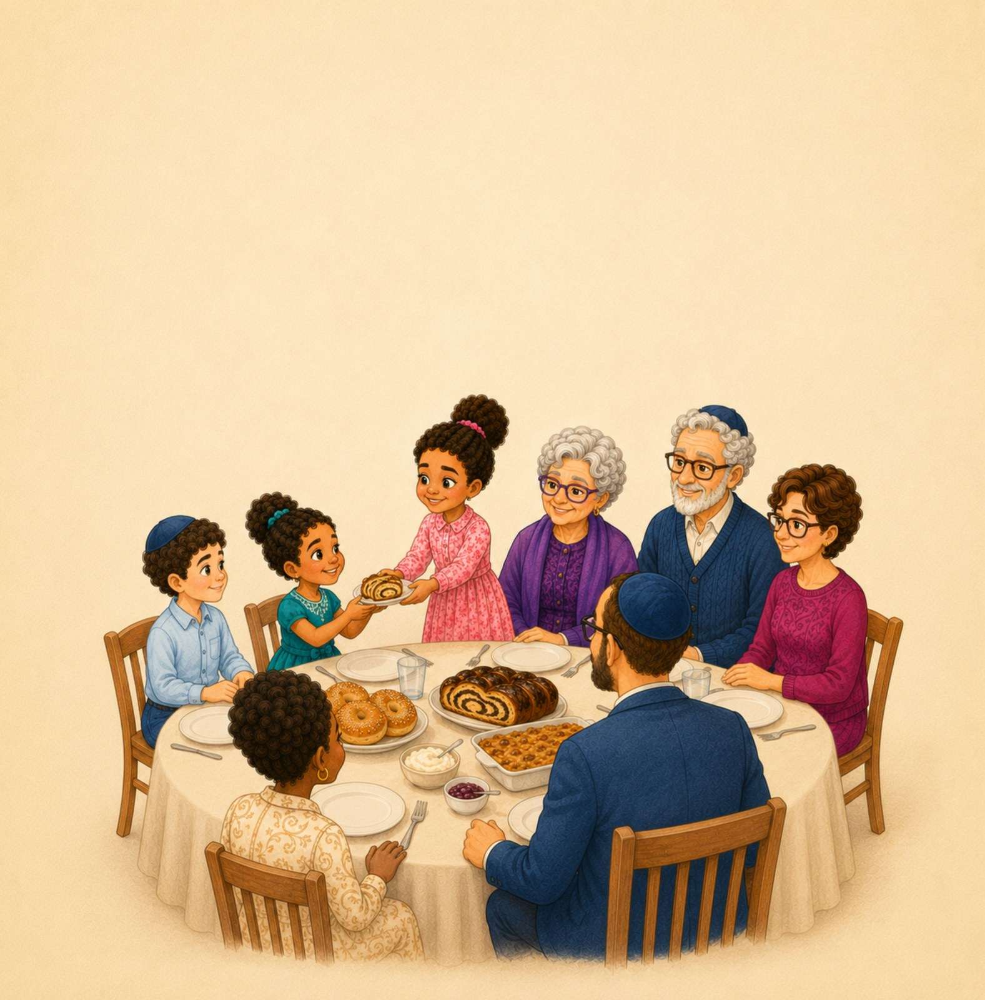
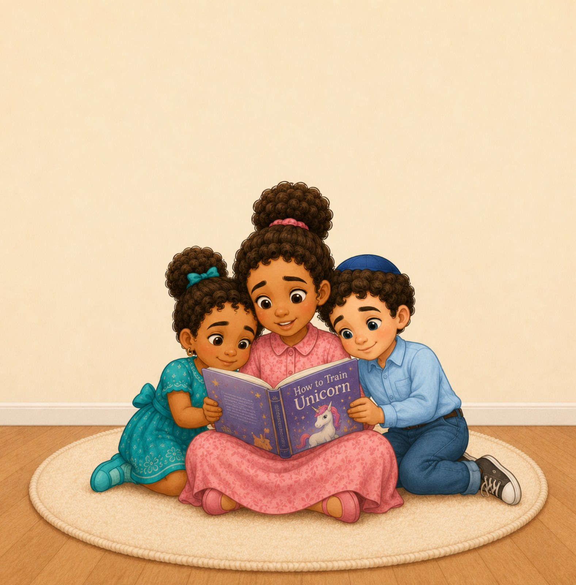

01
Prepare together
Noa helps Bubbe make food for the family’s break-fast meal.
A Noa + Bubbe story
A children’s illustrated story about reflection, apology, making things right, and beginning again.
Noa spends Yom Kippur with Bubbe and her family. As the day unfolds, she thinks about moments when she was unkind, offers sincere apologies, and learns that everyone can try to repair harm.

Inside the story

Noa helps Bubbe make food for the family’s break-fast meal.

Noa thinks carefully about her choices during the past year.

She apologizes to Shira and Ezra and chooses a kinder next step.

The family breaks the fast together after a day centered on reflection and repair.
“Yom Kippur helps us remember that we can try to make things right.”
— Bubbe
Themes in the book
The story gives children a concrete way to think about responsibility: remember a mistake, offer an apology, ask how to make things right, and try again.
Yom Kippur resources